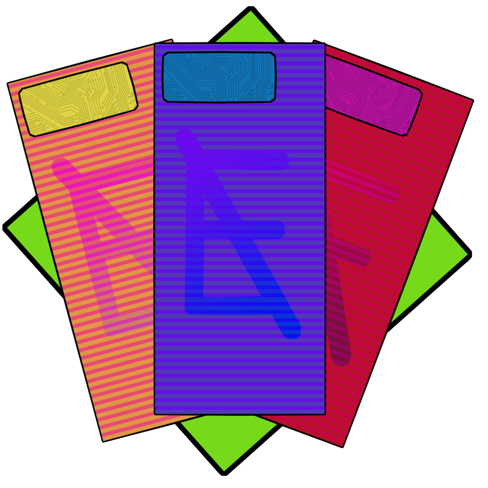

Robots made like pets are common occurances as living animals are even scarcer.

Credits are the currency of the entire city of Neo Eclipse. They're similar to credit cards in their function.
Screens rule the inner city even more than the rest of the city. Holograms are everywhere. Even as personal items.